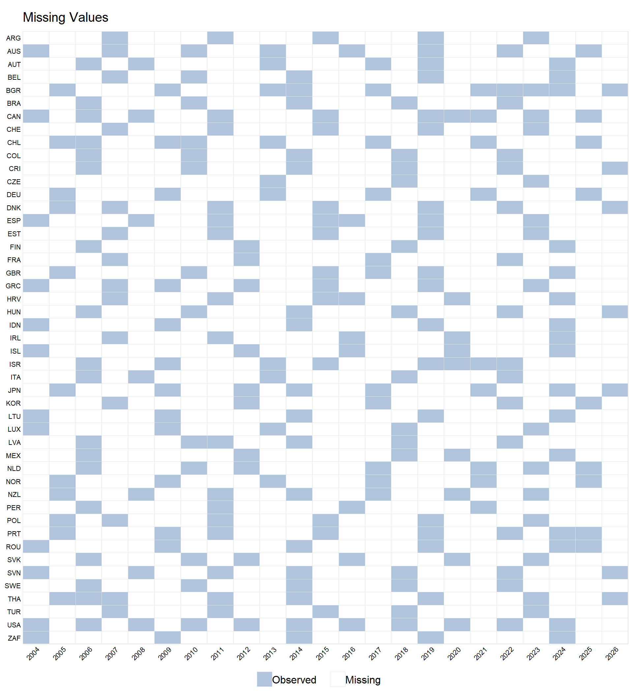

This section explores the panel structure of data retrieved through the OECD API, focusing on the Current well-being dataset.
Panel Structure
The Current well-being dataset is multidimensional rather than a single rectangular reference-area–time panel.
Each combination of measure, unit of measure, age group, sex, education level, and domain defines an analytical series:
MEASURE
UNIT_MEASURE
AGE
SEX
EDUCATION_LEV
DOMAIN
Holding those dimensions fixed leaves reference area, REF_AREA, and time, TIME_PERIOD, as the dimensions of the panel to be evaluated.
This is a project-defined analytical construct, not an official count of OECD indicators and not an SDMX analytical series. The internal variable SERIES_ID simply gives each project-defined analytical series a stable identifier.
Once an analytical series is fixed, reference areas constitute the panel units and time periods provide the repeated observations.
For a given series, the analytical structure is therefore reference area \(\times\) time period.
For series \(k\), let \(i\) index reference areas and \(t\) index time periods. It follows that the observed value is:
\[
Y_{itk}
\]
Panel diagnostics must therefore be computed within analytical series, rather than across the complete multidimensional dataset.
Series Inventory
It is therefore possible to identify all analytical series in the Current well-being dataset, compute their completion rates, and classify their balancedness.
Table 5Panel characteristics across Current well-being analytical series
Analytical series
Strongly balanced
Weakly balanced
Unbalanced
Median completion rate
Median periods
302
9
12
281
0.868
12
Strong and Weak Balancedness
Balancedness is evaluated for a specified analytical series, not for the multidimensional dataset as a whole.
For each analytical series \(k\), let \(N^{\mathrm{units}}_k\) be the number of distinct reference areas represented in the series, \(N^{\mathrm{periods}}_k\) the number of distinct time periods represented in the series, and \(N^{\mathrm{observed}}_k\) the number of observed reference area × time-period cells.
A value of \(1\) means that every cell in that analytical series’ reference area \(\times\) time-period grid is observed. Under the definitions used here, this is exactly the condition for a strongly balanced panel.
A panel is therefore strongly balanced when every reference area represented in the analytical series is observed in every time period represented in that series. Equivalently, a strongly balanced series has a completion rate of 100%.
A panel is weakly balanced when all reference areas have the same number of observations, even if those observations do not occur in exactly the same time periods. Strong balance therefore implies weak balance, but weak balance does not imply strong balance.
For reporting purposes, the analytical series are classified into three mutually exclusive categories: strongly balanced, weakly balanced, and unbalanced. Series satisfying both balance definitions are classified as strongly balanced; the weakly balanced category contains only the remaining series that satisfy the weak-balance definition.
Importantly, the completion-rate denominator is constructed from that analytical series’ own observed reference-area and temporal support.
A completion rate of 100% therefore indicates complete filling of that series-specific grid; it does not mean that the series spans every reference area or time period found elsewhere in Current well-being.
A series with narrow geographic or temporal extent can still be 100% complete if every cell within that narrower grid is observed. This differs from the geographic-coverage view, which asks how broadly each series extends across the database’s reference areas.
Balance and completion
In panel-data econometrics, a balanced panel generally refers to a panel in which the same units are observed over the same time periods (Wooldridge 2020).
Following Stata’s more granular terminology, this project distinguishes strongly balanced, weakly balanced, and unbalanced panels (StataCorp 2025).
A panel is strongly balanced when every unit is observed at the same time points. Weak balance requires only that every unit have the same number of observations; those observations need not occur at the same time points.
The plm package in R similarly defines a balanced panel by requiring the same time periods for each individual (Croissant and Millo 2008).
The completion rate, by contrast, is a project-defined diagnostic rather than standard panel-econometrics terminology. It measures the proportion of observed reference area × time-period cells within each analytical series’ own grid. Under this definition, 100% completion is equivalent to strong balance: every represented reference area is observed in every represented time period.
Completion should not be confused with extent. An analytical series can be 100% complete and strongly balanced while covering only a small number of reference areas or a short time span. Balance and completion describe how observations populate a given panel; they do not, by themselves, describe how geographically or temporally extensive that panel is.
Completion Distribution
The completion rate provides a graded measure of how fully each analytical series’ reference area × time-period grid is populated.
While a rate of 100% identifies a strongly balanced panel, values below 100% show varying degrees of incomplete grid filling. Figure 3 shows how these completion rates are distributed across the analytical series in Current well-being.
Figure 4Reference area–time-period missingness for the selected Current well-being analytical series

Do as OECD says
This website uses the OECD API to teach
reproducible R workflows.
For authoritative and up-to-date technical guidance,
consult the official OECD documentation.
References
Croissant, Yves, and Giovanni Millo. 2008. “Panel Data Econometrics in R: The plm Package.”Journal of Statistical Software 27 (2): 1–43. https://doi.org/10.18637/jss.v027.i02.
Mou, Hongyu, Licheng Liu, and Yiqing Xu. 2023. “Panel Data Visualization in r (panelView) and Stata (Panelview).”Journal of Statistical Software 107 (7): 1–20. https://doi.org/10.18637/jss.v107.i07.
StataCorp. 2025. Stata 19 Longitudinal-Data/Panel-Data Reference Manual. College Station, TX: Stata Press.
Wooldridge, Jeffrey M. 2020. Introductory Econometrics: A Modern Approach. 7th ed. Boston, MA: Cengage Learning.
Source Code
---engine: markdowntitle: "Panel Data"---This section explores the panel structure of data retrieved through the OECD API, focusing on the *Current well-being* dataset.## Panel StructureThe *Current well-being* dataset is multidimensional rather than a single rectangular reference-area–time panel.Each combination of measure, unit of measure, age group, sex, education level, and domain defines an **analytical series**:- `MEASURE`- `UNIT_MEASURE`- `AGE`- `SEX`- `EDUCATION_LEV`- `DOMAIN`Holding those dimensions fixed leaves reference area, `REF_AREA`, and time, `TIME_PERIOD`, as the dimensions of the panel to be evaluated.This is a project-defined analytical construct, not an official count of OECD indicators and not an SDMX analytical series. The internal variable `SERIES_ID` simply gives each project-defined analytical series a stable identifier.Once an analytical series is fixed, reference areas constitute the panel units and time periods provide the repeated observations. For a given series, the analytical structure is therefore reference area $\times$ time period.For series $k$, let $i$ index reference areas and $t$ index time periods. It follows that the observed value is:$$Y_{itk}$$Panel diagnostics must therefore be computed **within analytical series**, rather than across the complete multidimensional dataset.## Series InventoryIt is therefore possible to identify all analytical series in the *Current well-being* dataset, compute their completion rates, and classify their balancedness.::: {#tbl-panel-series-summary .cell tbl-cap='Panel characteristics across Current well-being analytical series.'}```{.r .cell-code}panel_inventory |> dplyr::mutate(balance_status = dplyr::case_when( strongly_balanced ~"Strongly balanced", weakly_balanced ~"Weakly balanced",TRUE~"Unbalanced" ) ) |> dplyr::summarise(`Analytical series`= dplyr::n(),`Strongly balanced`=sum(balance_status =="Strongly balanced"),`Weakly balanced`=sum(balance_status =="Weakly balanced"),Unbalanced =sum(balance_status =="Unbalanced"),`Median completion rate`= stats::median(completion_rate, na.rm =TRUE),`Median periods`= stats::median(n_periods, na.rm =TRUE) ) |> knitr::kable(digits =3 )```::: {.cell-output-display}| Analytical series| Strongly balanced| Weakly balanced| Unbalanced| Median completion rate| Median periods||-----------------:|-----------------:|---------------:|----------:|----------------------:|--------------:|| 302| 9| 12| 281| 0.868| 12|::::::## Strong and Weak Balancedness**Balancedness** is evaluated for a specified analytical series, not for the multidimensional dataset as a whole.For each analytical series $k$, let $N^{\mathrm{units}}_k$ be the number of distinct reference areas represented in the series, $N^{\mathrm{periods}}_k$ the number of distinct time periods represented in the series, and $N^{\mathrm{observed}}_k$ the number of observed reference area × time-period cells.The completion rate is:$$C_k =\frac{N^{\mathrm{observed}}_k} {N^{\mathrm{units}}_k N^{\mathrm{periods}}_k}$$A value of $1$ means that every cell in that analytical series' reference area $\times$ time-period grid is observed. Under the definitions used here, this is exactly the condition for a strongly balanced panel.A panel is therefore *strongly balanced* when every reference area represented in the analytical series is observed in every time period represented in that series. Equivalently, a strongly balanced series has a completion rate of 100%.A panel is *weakly balanced* when all reference areas have the same number of observations, even if those observations do not occur in exactly the same time periods. Strong balance therefore implies weak balance, but weak balance does not imply strong balance.For reporting purposes, the analytical series are classified into three mutually exclusive categories: **strongly balanced**, **weakly balanced**, and **unbalanced**. Series satisfying both balance definitions are classified as strongly balanced; the weakly balanced category contains only the remaining series that satisfy the weak-balance definition.Importantly, the completion-rate denominator is constructed from **that analytical series' own observed reference-area and temporal support**. A **completion** rate of 100% therefore indicates complete filling of that series-specific grid; it does **not** mean that the series spans every reference area or time period found elsewhere in *Current well-being*. A series with narrow geographic or temporal extent can still be 100% complete if every cell within that narrower grid is observed. This differs from the [geographic-coverage view](../index.qmd#country-coverage), which asks how broadly each series extends across the database's reference areas.::: {.data-note}### [Balance and completion]{.smallcaps}In panel-data econometrics, a **balanced panel** generally refers to a panel in which the same units are observed over the same time periods [@wooldridge_introductory_2020]. Following Stata's more granular terminology, this project distinguishes **strongly balanced**, **weakly balanced**, and **unbalanced** panels [@statacorp_panel_2025]. A panel is strongly balanced when every unit is observed at the same time points. Weak balance requires only that every unit have the same number of observations; those observations need not occur at the same time points.The `plm` package in R similarly defines a balanced panel by requiring the same time periods for each individual [@croissant_plm_2008].The **completion rate**, by contrast, is a project-defined diagnostic rather than standard panel-econometrics terminology. It measures the proportion of observed reference area × time-period cells within each analytical series' own grid. Under this definition, **100% completion is equivalent to strong balance**: every represented reference area is observed in every represented time period.Completion should not be confused with **extent**. An analytical series can be 100% complete and strongly balanced while covering only a small number of reference areas or a short time span. Balance and completion describe how observations populate a given panel; they do not, by themselves, describe how geographically or temporally extensive that panel is.:::## Completion DistributionThe completion rate provides a graded measure of how fully each analytical series' reference area × time-period grid is populated.While a rate of 100% identifies a strongly balanced panel, values below 100% show varying degrees of incomplete grid filling. @fig-completion-rate shows how these completion rates are distributed across the analytical series in *Current well-being*.::: {.cell}```{.r .cell-code}panel_inventory |> ggplot2::ggplot( ggplot2::aes(x = completion_rate) ) + ggplot2::geom_histogram(bins =30 ) + ggplot2::labs(x ="Completion rate",y ="Number of analytical series" )```::: {.cell-output-display}{#fig-completion-rate fig-alt='Histogram of completion rates across Current well-being series. The horizontal axis is the observed share of the reference area × time-period grid; the vertical axis counts series.' width=672 fig-alt="Histogram of completion rates across Current well-being series. The horizontal axis is the observed share of the reference area × time-period grid; the vertical axis counts series."}::::::## Missingness with `panelView``panelView` is used here as a visual diagnostic rather than as the formal definition of balancedness [@mou2023panelview]. The explicit diagnostics above determine whether each analytical series is strongly or weakly balanced and quantify its completion rate. It follows that `panelView` complements those measures by showing where missing reference area × time-period cells occur.For illustration, @fig-panelview-example uses the analytical series with the highest completion rate among those spanning the maximum number of time periods: <strong><span data-selected-series-name></span></strong>.@tbl-selected-series identifies the dimensions that define the selected series.::: {#tbl-selected-series .cell tbl-cap='Dimensions defining the analytical series displayed in the `panelView` diagnostic.'}```{.r .cell-code}series_definition |> dplyr::mutate(Dimension = dplyr::recode( DIMENSION,MEASURE ="Measure",UNIT_MEASURE ="Unit of measure",AGE ="Age",SEX ="Sex",EDUCATION_LEV ="Education level",DOMAIN ="Domain" ),`Selected value`= dplyr::coalesce( LABEL,"Label unavailable" ) ) |> dplyr::select( Dimension,`Selected value`,`SDMX code`= CODE ) |> knitr::kable()```::: {.cell-output-display}|Dimension |Selected value |SDMX code ||:---------------|:-------------------|:---------||Measure |Voter turnout |8_2 ||Unit of measure |Percentage of votes |PT_VOTES ||Age |Total |_T ||Sex |Total |_T ||Education level |Total |_T ||Domain |Civic engagement |HSL_8 |::::::::: {.cell}```{.r .cell-code}panelView::panelview(Y ="OBS_VALUE",data = panel_data,index =c("REF_AREA", "TIME_PERIOD_NUMERIC"),type ="missing",leave.gap =TRUE,axis.lab.angle =45,xlab ="",ylab ="")```::: {.cell-output-display}{#fig-panelview-example fig-alt='Reference-area by period matrix showing observed and missing cells for the series identified in the selected-series table.' width=960 fig-alt="Reference-area by period matrix showing observed and missing cells for the series identified in the selected-series table."}::::::<script src="../assets/panelview-enhancement.js" defer></script><script src="../assets/site-refinements.js" defer></script>{{< oecd-rules >}}